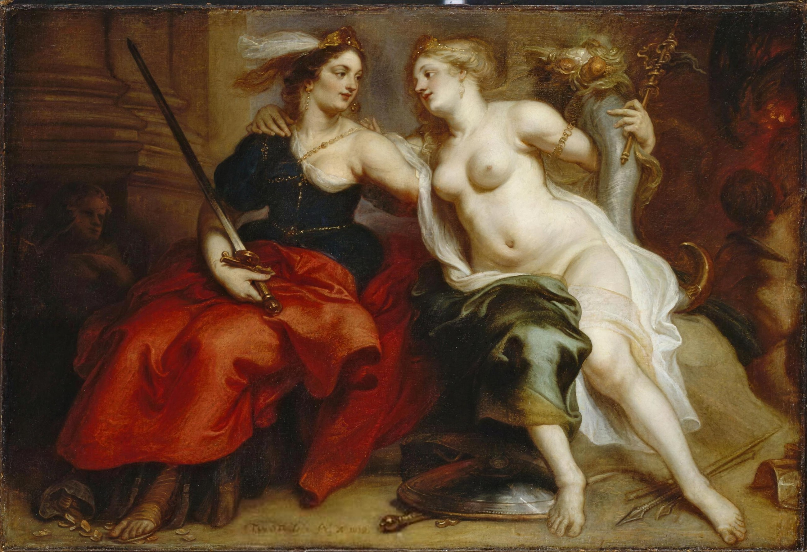

Theodoor van Thulden
Turn it with a finger, then tap the button to place the framed painting on your own wall through your phone camera. Pinch to resize.
Works on recent iPhones and Android phones. If the button doesn't appear, open this page in Safari (iPhone) or Chrome (Android).
Pinch or scroll to zoom, drag to move. Tap a numbered dot, or a name below, to go to a detail.

Pick a detail to explore the painting.